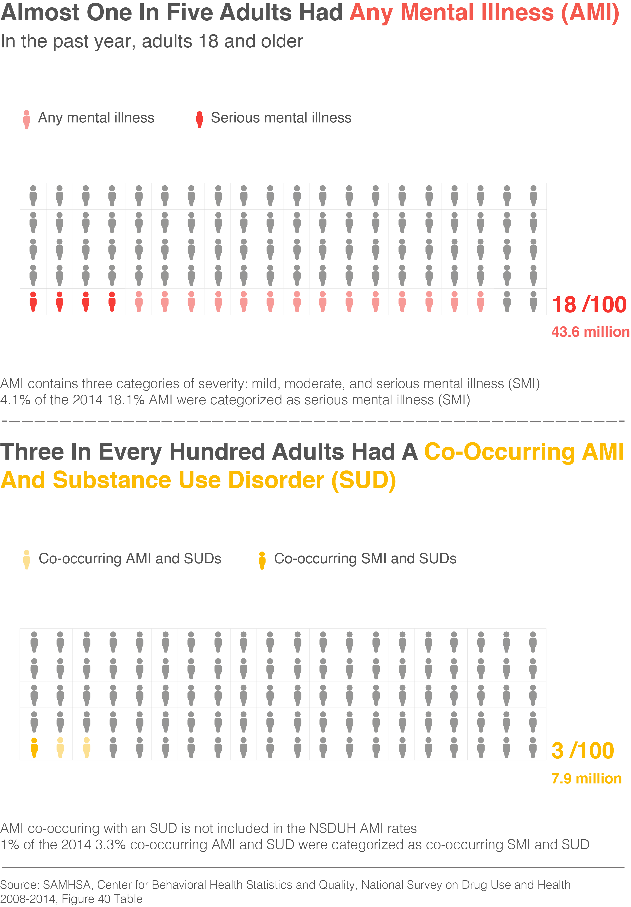
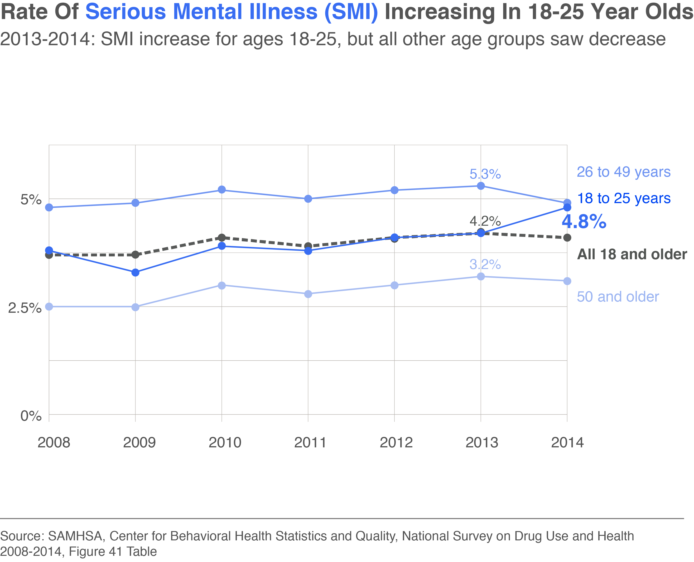
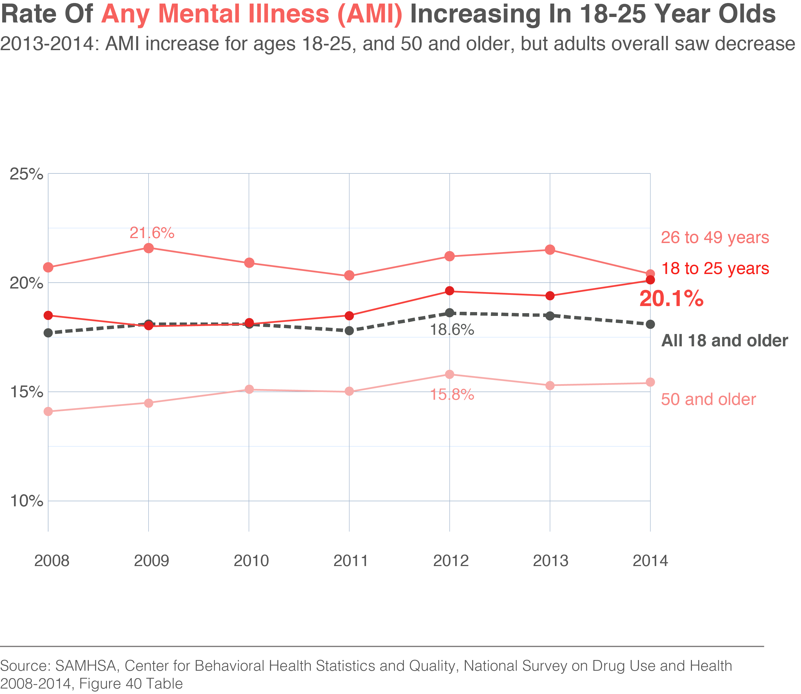
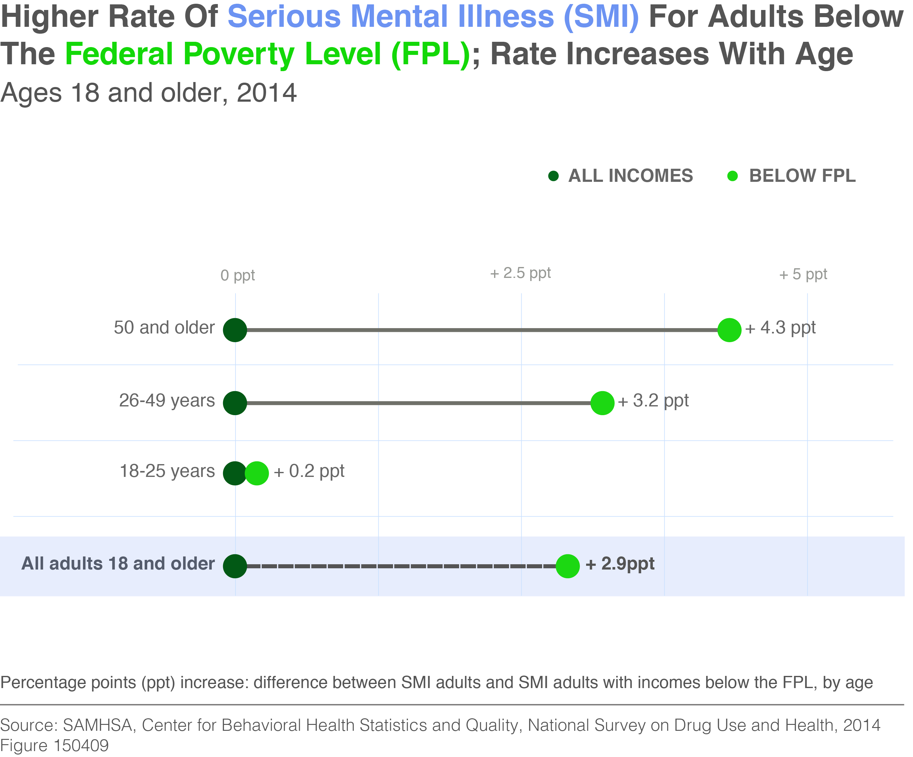
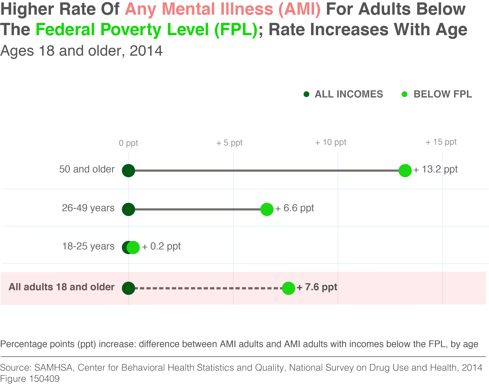
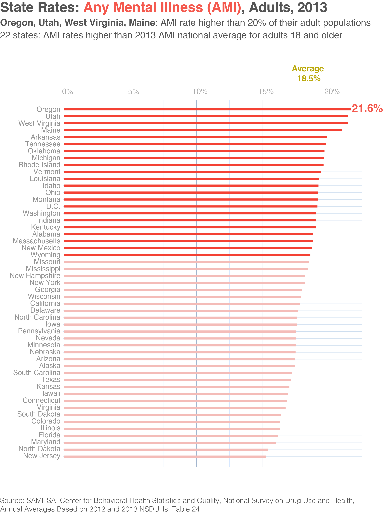

MENTAL HEALTH IN THE U.S.
Data from the National Survey on Drug Use and Health (NSDUH)
Clare Churchouse, posted December 14, 2015
The NSDUH survey report was published in September 2015, 'Behavioral Health Trends in the United States: Results from the 2014 National Survey on Drug Use and Health', Substance Abuse and Mental Health Services Administration (SAMHSA). It details behavioral health trends in the noninstitutionalized population of the United States from the past year. The report and detailed tables provide national and state data on behavioral health trends: mental health and tobacco, alcohol, and illicit drug use (including non-medical use of prescription drugs).
'Any mental illness' (AMI) is defined as having any mental, behavioral, or emotional disorder in the past year that met DSM-IV criteria (excluding developmental disorders and SUDs). 'Serious mental illness' (SMI) is one of the three categories of AMI and is defined as AMI adults who have had any mental, behavioral, or emotional disorder that substantially interfered with or limited one or more major life activities. Since the NSDUH survey does not cover institutions (such as prisons, nursing homes, mental institutions, military personnel on active duty), and does not cover those with no fixed address (the homeless who are not in shelters), it may be that the mental health statistical data is somewhat lower than if all populations were surveyed. The survey though does interview residents of households and individuals in non-institutional group quarters including halfway houses, homeless shelters, college dormitories, and migratory workers’ camps.
The term 'behavioral health' covers the full range of mental and emotional wellbeing – from coping with day-to-day challenges of life, to the treatment of serious mental illnesses, and substance use disorder and other addictive behaviors. Behavioral health has been getting more attention in recent years. The Affordable Care Act (ACA) instigated changes in the way that health care is delivered, paid for and monitored, and stipulated that all plans must cover: behavioral health treatment, such as psychotherapy and counseling; mental and behavioral health inpatient services; and substance use disorder (commonly known as substance abuse) treatment.
People with a 'substance use disorder' (SUD) are defined as those who met the criteria for dependence or abuse for alcohol or illicit
drugs in the past 12 months based on criteria specified in the Diagnostic
and Statistical Manual of Mental Disorders, 4th edition (DSM-IV). Having both a mental health issue and an SUD is referred to as a co-occurring disorder. Note that AMI numbers as reported by NSDUH do not include developmental or substance use disorders.

For any 100 adults, more than 18 (18.1%) had any mental illness (AMI) in the past year. For any 100 adults, more than 4 (4.1%) are in the third AMI category: serious mental illness (SMI). For any 100 adults, more than 3 (or 3.3%) have a co-occurring AMI and substance use disorder (SUD) (including SMI). For any 100 adults, 1 (or 1%) have a co-occurring SMI and SUD.
What is the age breakdown of AMI and SMI?


Does income below the Federal Poverty Level correlate with higher or lower rates of AMI and SMI?


Are AMI rates the same across states or do certain states see higher rates?

